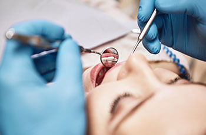
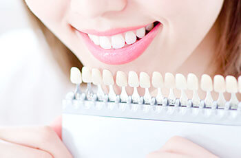

- TOP
- 審美治療・ホワイトニング
保険診療で虫歯治療をするとき、失った部分を補うために金属を使うことがあります。比較的安価に、比較的簡単に機能回復ができますが、まわりの白い歯の中で金属は目立ってしまいます。笑ったり、話したりするたびに気になる方もいらっしゃるかもしれません。
気になる方は、大阪府高槻市の歯医者「河原歯科クリニック」に、お気軽にご相談ください。セラミックなどの天然歯に似た素材を使って、機能回復と見た目の自然さの両立をはかります。それを『審美治療』と呼びます。
自然な美しさと機能回復の両立が可能な『審美治療』は、自費診療になるとはいえ、健康につながるので長い目で見るとおすすめな治療です。また、天然歯を薬剤で白くする『ホワイトニング』にも対応いたしますので、お気軽にご相談ください。
口元の自然な見た目と機能回復の両立をはかる審美治療
「黒ずんで目立つ銀歯が気になって笑えない」「外れてしまった詰め物をきれいな白い素材に替えたい」という方は、大阪府高槻市の歯医者「河原歯科クリニック」にご相談ください。歯本来の機能を整えながら、保険診療の虫歯治療で使用した詰め物や被せ物を白いセラミック素材に替え、見た目を自然に美しく仕上げます。保険診療では扱えない素材や作製方法、治療方法ですので、自費診療ですが、『審美治療』には見た目だけではないメリットがあります。
土台を整えてからの治療が大切です
審美治療では、素材を選べるうえ、透明感や色調が天然歯とほとんど変わらない被せ物をつくれます。しかし、その際に大切なのは、土台がしっかりしていることです。被せ物を装着する歯の根管治療をしっかりしていないと、やがて歯根部分が虫歯に汚染されてしまいます。歯周病治療を怠ると、歯を支える顎の骨が溶けてしまうので、セラミックを被せている土台が不安定になり「沼地に豪邸を立てる」ようなことになってしまいます。美しい被せ物を入れても、根管治療や歯周病治療がきちんとできていないと長く使用できませんので、まず土台の治療をしっかり終わらせることが大切です。
日本歯科保存学会専門医や日本補綴歯科学会専門医が在籍しています

「歯を残して維持（保存）する」のが目的の日本歯科保存学会の専門医と、「失った歯の部分や歯そのものの機能回復のための治療」が目的の日本補綴歯科学会の専門医が、当クリニックには在籍しています。そのため、さまざまな選択肢から治療素材や方法を、患者様の口腔内の状態に合わせてご提案します。歯科医師サイドの意見ももちろんお伝えしますが、人工歯をずっとお使いになるのは患者様ですので、お好みの歯の色や形、使用素材などは最終的に患者様が納得されたもので治療を進めていきます。実際にセラミックを扱って人工歯を作製する歯科技工士も院内に在籍していますので、診療ユニットで、歯科医師と一緒にご相談を承ります。
患者様に負担の少ないセレックシステムを導入しています

セレックシステムとは、セラミック素材の詰め物や被せ物を短時間で加工する歯科用CAD/CAMシステムです。虫歯部分を削ったあと、口腔内を小型3Dカメラでスキャンします。このプライムスキャンでデジタル印象を採取し、そのデータを使ってコンピュータで設計すると、ミリングマシンが詰め物や被せ物をセラミックブロックから自動で削り出すのです。
歯を削ってから、人工歯を装着するまでの通院期間も通院回数も少ないうえ、天然歯のように美しく、金属アレルギーの心配がないメタルフリー素材のセラミック治療ができます。
プライムスキャンも患者様の負担を抑えるシステムです。通常の印象採得は、シリコン製の印象材を詰めた大きなマウストレーをお口の中に入れて、固まるまでそのまま待たなければなりません。また、高い精度で印象が取れるかは、術者の技術にも左右されます。しかし、プライムスキャンなら小型カメラで撮影するだけですので、従来の印象採取のわずらわしさがありません。ただし、前歯を作製する際や歯肉炎などでスキャンだけでは不十分なときには、従来型の印象採取も行います。
セレックシステムの特徴
1：治療期間が短い
-
院内で設計どおりに人工歯が自動で削り出されます。そのため、従来のセラミック製の人工歯に比べて作製時間がかなり短めです。
2：型取り不要
-
お口の中を小型カメラでスキャンするだけですので、印象採取に時間がかからないうえ、患者様のわずらわしさを解消します。
3：耐久性があるうえ経済的
-
耐久性の高いセラミックブロックで、歯とのすき間が小さく精度の高い人工歯をつくるので、虫歯の再発のリスクを低く抑えます。
4：美しくてメタルフリー
-
天然歯に似た透明感や色調が特徴のセラミック治療です。メタルフリー（金属不使用）なので、金属アレルギーの心配もありません。
光学スキャナー（プライムスキャン）の特徴
1：わずらわしくない
-
小型カメラで撮影するだけです。従来の歯型採取とは大きく異なり、口を大きく開けて、印象材の硬化を待たずに済みます。
2：時間が短い
-
スキャンの時間も短いうえ、データを送るだけなのでスピーディーです。設計後、セラミックのブロックをセットすればすぐに削り出されます。
3：精度が高い
-
印象採取からセラミックの人工歯をつくるよりも工程が少なく、変形もないので、精度の高い人工歯の作製が可能です。
4：負担が少ない
-
従来の印象採取の際に心配な、誤嚥や嘔吐の心配がありません。また、グラグラの歯が抜けてしまうリスクもありません。
5：清潔で汚れない
-
スキャナーは先端を取り替えるのでいつも清潔です。印象材のように、お口まわりにこびりつく心配もありません。
1日で虫歯治療を完了させることも可能です
これまでの詰め物を装着する虫歯治療では、歯を削るのに1回、人工歯を作製する期間を経て、人工歯を装着するのに1回かかり、少なくとも2回の通院が必要でした。しかし、セレックシステムなら、1日で装着までを行う「1dayトリートメント」が可能です。ジルコニアには対応していませんが、ご予約いただければ「e-max」での治療ができます。忙しいけれどもセラミックで治療したい方は事前にご相談ください。
審美治療メニュー
タルセラミッククラウン
-
金属のフレームにセラミックを焼きつけた被せ物です。メタルボンドとも呼ばれます。コストパフォーマンスが高い人工歯で、耐久性があるため奥歯にも使用可能です。経年により、「歯の根元の金属が見えることがある」「金属アレルギーを引き起こす心配がある」のがデメリットです。
オールセラミック（e-max）
-
歯科に特化したセラミック素材で、自然な白さと透明感があって美しいうえ、金属アレルギーの心配がなく、詰め物にも被せ物にも安心して使えます。長期的な使用が可能で強度が高いですが、天然歯に近い摩耗性もあり、噛み合う歯にあまり負担をかけません。ただし、ブリッジなどでは使用できないことがあります。
ジルコニアセラミック
-
ジルコニアはオールセラミックの一種で、人工ダイヤモンドにも使用される審美性・耐久性が高い素材です。天然歯と同等の色調や透明感を備えながら、適度な強度としなやかさも合わせ持っています。金属ではないので、金属アレルギーの方も安心してお使いいただけます。
ハイブリッドセラミック
-
セラミックとレジン（歯科用プラスチック）の混合物で、詰め物や被せ物に加工します。ほかの審美歯科素材に比べると、価格がリーズナブルであることが特長です。美しさはオールセラミックより劣りますが、適度な硬さなので噛み合う歯を傷めません。
ゴールド
-
金合金の素材で詰め物や被せ物をつくります。耐久性や強度が高いので奥歯に使用できるうえ、適度なやわらかさがあるので噛み合う歯にもやさしいのが特長です。金属でありながら金属アレルギーを起こしにくい、安定した素材です。
ファイバーコア
-
グラスファイバーでつくるコア（芯）です。光を通す素材なので、その上に被せるクラウンの透明感を損ないません。天然歯に近い強度と柔軟性があるので、歯根の破折リスクも低減できます。
ラミネートベニア
-
前歯の表面を薄く削り、シェル状にしたセラミックの板を貼りつける治療法です。施術可能なのは前歯のみですが、すきっ歯など軽度の歯並びの乱れを短期間で整えられます。ホワイトニングの効果が期待できない歯も白くできます。
保証について
クリニックでは、定期的にメインテナンスにご来院いただいている患者様に対して、下記の保証をご用意しております。症例によって条件や費用は異なりますので、まずはご相談ください。
| セラミックなどの自費補修物 | 装着後5年 |
|---|
ホワイトニング～天然歯を薬剤で白くします～
毎日ブラッシングをしているのに、いつの間にか黄ばんでしまった歯――。鏡に映った自分の口元を見て、がっかりされた経験がある方もいらっしゃるかと思います。そんな気になる歯の黄ばみを、削ることなく薬剤で白くする処置がホワイトニングです。手軽に白い歯を手に入れられるので、近年は男性・女性を問わず、若い方からシニア層までホワイトニングを受ける方が増えています。
歯が黄ばむ原因
歯の表面のエナメル質は、年齢とともに薄くなります。それに加えて、エナメル質の内側にある象牙質（もともと薄い黄色をしています）が、経年によってさらに色が濃くなります。この2つが重なり、歯が黄ばんで見えるようになるのです。
また、喫煙習慣がある方はヤニによって黄ばみが強くなります。紅茶・コーヒー・カレーなどの色の濃い食べ物や飲み物の摂取によっても、色素が沈着して黄ばみが目立つようになります。
ホワイトニングとは？

天然歯を削らず、専用の薬剤（ホワイトニング剤）を使って白くする処置がホワイトニングです。ホワイトニングには、歯科医院で行う「オフィスホワイトニング」と、患者様に取り組んでいただく「ホームホワイトニング」があります。そして、歯医者でオフィスホワイトニングを行ってから、ご自宅などでホームホワイトニングを継続して行っていただく「デュアルホワイトニング」も人気です。
ホワイトニングの種類
オフィスホワイトニング
歯科医院において高濃度のホワイトニング剤を歯の表面に塗布し、特殊な光を照射して歯の色素を分解します。
| メリット | デメリット |
|
|---|---|---|
| デメリット |
|
|
オフィスホワイトニングの流れ
-
STEP1：カウンセリング
まず、患者様のご要望をうかがいます。続いてお口の状態を検査し、虫歯や歯周病などがある場合はそちらの治療を優先します。
-
STEP2：歯のクリーニング
ホワイトニングを行う前に、お口のクリーニング（PMTC）を行います。
-
STEP3：ホワイトニング
歯の表面に高濃度のホワイトニング剤を塗布し、特殊な光を当てて歯の色素分解を促進させながら白くしていきます。
ホームホワイトニング
ご自宅などで、ご自分のペースで取り組みながら歯を白くする方法です。薬剤を注入した専用のマウストレーを毎日一定時間装着していただきます。
| メリット | デメリット |
|
|---|---|---|
| デメリット |
|
|
ホームホワイトニングの流れ
まず、歯科医院にてSTEP1～STEP3まで行ったあと、ご自宅でのSTEP4～STEP7を毎日くり返していただきます。
-
STEP1：カウンセリング
【医院にて】カウンセリングを行います。そのあとでお口の状態をチェックし、虫歯や歯周病がある場合はその治療を優先します。
-
STEP2：歯のクリーニング・マウストレー作製医院にて】
歯のクリーニングを行い、歯型を採取してマウストレーを作製します（作製には1週間ほどかかります）。
-
STEP3：説明
【医院にて】マウストレーとホワイトニングジェルをお渡しし、使用法などをご説明します。
-
STEP4：ブラッシング
【ご自宅にて】はじめに、歯をきれいにブラッシングしてください。
-
STEP5：マウストレー装着
【ご自宅にて】ホワイトニングジェルを注入したマウストレーを装着します。
-
STEP6：口腔内洗浄
【ご自宅にて】一定時間装着したら、外してお口をゆすいでください。
-
STEP7：マウストレー洗浄
【ご自宅にて】マウストレーは水かぬるま湯で洗い、ケースで保管します。
デュアルホワイトニング
歯科医院でオフィスホワイトニングを受けていただいたあと、ご自宅などでホームホワイトニングを継続して行っていただきます。
| メリット | デメリット |
|
|---|---|---|
| デメリット |
|
|
デュアルホワイトニングの流れ
患者様のご要望や希望する白さなどによって多少異なりますが、目安としては、オフィスホワイトニングは10日に1回のペースで計4回、ホームホワイトニングは2日に1回のペースで1ヶ月半ほど行っていただきます。